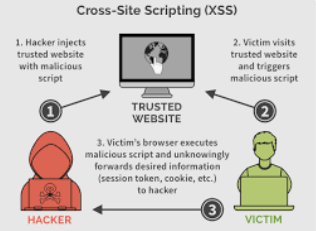
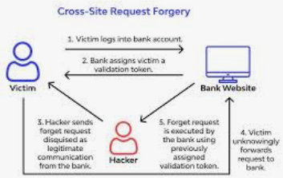
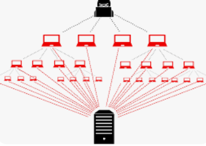

SQL injection occurs when attackers inject malicious SQL code into input fields, manipulating a web application’s database. This can lead to unauthorized access, data manipulation, or data exfiltration.
In addition to the Equifax breach, the 2011 Sony PlayStation Network hack was facilitated by SQL injection. Hackers exploited a vulnerability to access and steal user data, including personal information and credit card details.
reference link>

XSS involves injecting malicious scripts into web pages that are then executed by users’ browsers. This allows attackers to steal information and session tokens, or perform actions on behalf of users.
The MySpace worm in 2005 utilized XSS to spread rapidly. Users were unknowingly executing malicious scripts by simply viewing an infected user’s profile, leading to the compromise of thousands of accounts.
reference link>

CSRF forces users to perform unwanted actions without their consent by tricking them into executing malicious requests, often initiated by a different website. This can result in unauthorized actions on the user’s behalf.
In 2008, a CSRF vulnerability in Gmail allowed attackers to change a user’s email settings without their knowledge. This highlighted the potential impact of CSRF on widely used services.
reference link>
Security misconfigurations occur when a web application is improperly set up, leaving vulnerabilities that attackers can exploit. This can include exposed sensitive files, default credentials, or unnecessary services.
In 2014, a security misconfiguration in a Verizon Communications server exposed the personal information of over 6 million customers, emphasizing the importance of thorough configuration reviews.
reference link>

Distributed Denial of Service (DDoS) attacks flood a website’s servers with an overwhelming amount of traffic, rendering the site inaccessible to legitimate users.
The 2018 GitHub DDoS attack set a record for the largest DDoS attack at the time, peaking at 1.3 terabits per second. This massive traffic overload temporarily disrupted GitHub’s services.
reference link>

Brute force web applications security attacks involve systematically attempting various username and password combinations until the correct one is found. This method exploits weak or easily guessable credentials.
In 2014, a brute force attack on eBay exposed the login credentials of millions of users, prompting the company to enforce stricter password policies.
reference link>
Phishing uses deceptive emails, websites, or messages to trick individuals into revealing sensitive information such as usernames, passwords, or financial details.
The 2016 Gmail phishing attack, known as “Google Docs,” tricked users into clicking a seemingly innocent link that granted attackers access to their Gmail accounts. This sophisticated phishing campaign affected a large number of users.
reference link>

MitM web application security attacks involve intercepting and possibly altering communication between two parties without their knowledge. This can lead to the interception of sensitive data.
The 2014 Superfish incident involved the pre-installed Superfish adware on Lenovo laptops, which performed MitM attacks by intercepting and modifying web traffic to inject advertisements. This raised serious privacy concerns.
reference link>

File inclusion vulnerabilities allow attackers to include files on a server, potentially leading to the execution of malicious code. This can result in unauthorized access or data manipulation.
In 2012, a file inclusion vulnerability in LinkedIn’s mobile app allowed attackers to access and manipulate user data, emphasizing the importance of secure coding practices.
reference link>

Zero-day exploits target vulnerabilities unknown to the software vendor, giving attackers an edge until a patch is released. This can result in widespread and severe compromises.
The 2017 WannaCry ransomware attack exploited a zero-day vulnerability in Microsoft Windows, affecting organizations globally. The attack highlighted the rapid and widespread impact of exploiting unknown weaknesses.
reference link>